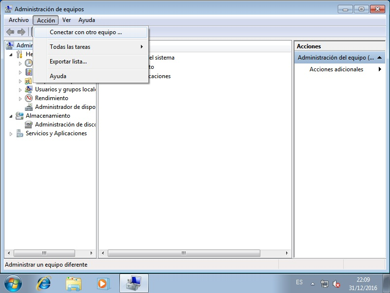

6.4.2.4. Directorios compartidos¶
Conocido cómo añadir clientes, toca saber cómo compartir directorios1. Hay dos métodos:
A través de las POSIX ACL.
A través de las ACL de windows.
6.4.2.4.1. POSIX ACL¶
Para la prueba usaremos el directorio /srv/samba/poshare del controlador
de dominio:
# mkdir -p /srv/samba/poshare
# ls -ld /srv/samba/poshare
drwxr-xr-x 2 root root 4096 dic 31 13:28 /srv/samba/poshare/
# echo "Hola" > /srv/samba/poshare/saludo.txt
y añadiremos a /etc/samba/smb.conf:
[POSIXShare]
path = /srv/samba/poshare
read only = No
Por ultimo, recargamos la configuración para que tenga efecto:
# invoke-rc.d samba-ad-dc reload
Con esto, ya tendríamos compartido el recurso de una manera básica. Obsérvese que en el servidor se ha definido que puede acceder al recurso cualquiera, pero que solo root puede escribir en él. Por ese motivo, si desde un cliente usáramos un usuario del dominio2, para acceder al recurso:
usuario@clienteL$ smbclient //DC/POSIXShare -U zicotropico
Enter zicotropico's password:
Domain=[IESPJM] OS=[Windows 6.1] Server=[Samba 4.5.2-Debian]
smb: \> ls
. D 0 Sat Dec 31 18:13:11 2016
.. D 0 Sat Dec 31 13:28:37 2016
saludo.txt N 5 Sat Dec 31 17:39:11 2016
1733064 blocks of size 1024. 622044 blocks available
smb: \> get saludo.txt
getting file \saludo.txt of size 5 as saludo.txt (1,2 KiloBytes/sec) (average 1,2 KiloBytes/sec)
podremos hacerlo e incluso obtener ficheros (si es que estos permitían la lectura). Sin embargo, no podremos subir nada, pues no tenemos permisos de escritura:
smb: \> put despedida.txt
NT_STATUS_ACCESS_DENIED opening remote file \despedida.txt
Esto suponiendo que en el cliente tengamos un fichero llamado
despedida.txt, claro. samba, pues, respeta los permisos definidos en
el propio servidor. Sin menoscabo de esto, la configuración de samba permite
negar o permitir el acceso según el usuario, el grupo o la máquina de acceso.
Por ejemplo:
[POSIXShare]
path = /srv/samba/poshare
read only = No
valid users = @"domain users"
invalid users = fany
hosts allow = localhost 192.168.255.0/24
hosts deny = 192.168.255.253
Incluye cuatro directivas relativas a estos accesos:
- valid users
Permite indicar cuáles son los únicos usuarios a los que se les permite el acceso. El signo @ indica que se indica el nombre de un grupo. La ausencia de esta directiva implica todos los usuarios.
- invalid users
Indica los usuarios (y grupos) con el acceso vetado. Su ausencia implica que no haya veto alguna. Tiene preferencia sobre la directiva anterior, de modo que en caso de que un usuario tenga permitido y denegado el acceso, se denegará.
- hosts allow
Indica las máquinas desde las que se podrá acceder.
- hosts deny
Indica las máquinas desde las que no se podrá acceder.
Ahora bien, debe tenerse claro que si un usuario no tiene permisos para acceder al directorio compartido (y por permisos se entiende los que se ven al hacer un ls), el usuario no podrá acceder, aunque valid users diga lo contrario.
Por supuesto, podemos dotar al directorio de aquellos permisos que nos parezcan más adecuados. Podríamos definir permisos basados en listas de control de accesos o algo más sencillo con el bit pegajoso como:
root@dc# chmod 1777 /srv/samba/poshare
que permitirá escribir a todo el mundo, pero no borrar lo que no sea de uno mismo. Además,
6.4.2.4.2. Windows ACL¶
Es el método que recomienda la documentación de samba. Requiere que el sistema
de ficheros soporte acl y atributos extendidos de usuario, cosa que se
comprobó al instalar el controladore de dominio. Además, si la máquina sobre
la que se quieren usar, no es un controlador de dominio es necesario añadir
a smb.conf:
vfs objects = acl_xattr
map acl inherit = yes
store dos attributes = yes
Para poder configurar los permisos de compartición es necesario un usuario que tenga el privilegio SeDiskOperatorPrivilege3:
$ net rpc rights list privileges -S dc -k | grep SeDiskOperatorPrivilege
SeDiskOperatorPrivilege Manage disk shares
pero en la instalación predeterminada no hay ningún usuario ni grupo con este privilegio:
$ net rpc rights list privileges SeDiskOperatorPrivilege -S dc -k
SeDiskOperatorPrivilege:
Así que lo que vamos a hacer es conceder este permiso a los usuario pertenecientes al grupo «Domain Admins», que ya existe4:
$ getent group domain_admins
domain_admins:*:2012:administrator
La orden adecuada es la siguiente:
$ net rpc rights grant "Domain Admins" SeDiskOperatorPrivilege -S dc -k
Successfully granted rights.
que, efectivamente, no falla. Esto son los privilegios del grupo Domain Admins:
$ net rpc rights list accounts "Domain Admins" -S dc -k
SeDiskOperatorPrivilege
o, por verlo de otra forma, estas son las cuentas que poseen ese privilegio (que fue la orden que usamos en un principio para comprobar que no había ninguna):
$ net rpc rights list privileges SeDiskOperatorPrivilege -S dc -k
SeDiskOperatorPrivilege:
IESPJM\Domain Admins
Ahora podríamos añadir un usuario existente a este grupo (o haber dado a este usuario directamente el privilegrio), pero podemos usar el administrador de samba, ya que:
$ id -Gn Administrator | grep -o domain_admins
domain_admins
pertenece a dicho grupo.
Con un usuario que puede gestionar las compartición de discos, ya podemos crear un directorio a compartir:
# mkdir -p /srv/samba/winshare
# chgrp domain_admins /srv/samba/winshare
# chmod g=rwx /srv/samba/winshare
y compartirlo a través de smb.conf:
[WINDOWShare]
path = /srv/samba/winshare
read only = No
No debemos olvidarnos de recargar la configuración:
# invoke-rc.d samba-ad-dc reload
El resto de la configuración debemos hacerla en un cliente windows adherido al dominio e identificarnos en él con un usuario con permisos para establecer propiedades de compartición.
Primeramente debemos usar el ítem de Administrar Equipo:

Esto abrir una aplicación que permite administrar distintos aspectos del sistema. Como lo que queremos es administrar el controlador de dominio no el equipo local, debemos, situados sobre el ítem Administración de equipos, seleccionar Acción en el menú superior y conectar a otro equipo que es DC (esto es, el nombre que elegimos para el controlador):
Ya en la administración del controlador de dominio debemos escoger
Herramientas del sistema>Carpetas compartidas>>Recursos compartidos:
para que aparezca qué es lo que comparte el controlador con el dominio. Ahora
en el menú contextual del recursos WINDOWShare, que es el que nos
interesa y elegir el ítem Propiedades:
En la ventana emergente, hay dos pestañas de interés:
- Permisos de los recursos compartidos
Que permite indicar quiénes pueden acceder o quiénes no. Su manipulación equivale más o menos a las directivas valid users e invalid users, que se vieron bajo el epígrafe anterior. En este caso, convendría eliminar el grupo Todos y sustituirlo por Domain Users, que son los que deberían acceder a este recurso.
- Seguridad
En esta pestaña, se pueden editar los permisos y definir qué puede hacer cada usuario o grupo individual. Este proceder equivale a la manipulación de permisos directa del directorio en el controlador. De hecho, si hacemos algún cambio (p.e. dar Control total a un determinado usuario) y nos vamos al controlador veremos que lo que hace samba internamente es definir ACLs sobre el directorio, ACLs que nosotros mismos podríamos haber definido usando setfacl5.
Enlaces de interés
Notas al pie
- 1
Cualquier miembro del dominio puede compartir un directorio, bastará con tocar su
smb.confcorrespondiente, tal como se explica aquí para el controlador.- 2
Para crear un usuario, consóltese el epígrafe correspondiente. Si se sigue en estricto orden esta guía, aún no tendremos creado ninguno, pero aún podremos usar el usuario Administrator (en vez de zicotropico) para hacer las pruebas que se sugieren. La diferencia es que sí podremos tendremos permisos para subir el fichero
despedida.txt.- 3
El comando net permite usar autenticación con kerberos añadiendo la opción
-k, que es lo que se ha hecho. Obviamente, esto exige haber obtenido las credenciales antes con kinit.- 4
Recuérdese que al configurar sssd (gracias al cual podemos usar getent) indicamos que queríamos sustituir el espacio por el el subrayado, así que en toda operación en la que intervenga nss «Domain Admins» será domain_admins (o cualquier otra variante que intercambie minúsculas por mayúsculas). Otra forma de haber consultado la existencia del grupo habría sido a través de :kbd:samba-tool group list` tal como se hizo durante las comprobaciones post-instalación.
Nótese también que con la configuración de sssd que hemos realizado, este inventa todos los datos (excepto el nombre de usuario y la contraseña) que necesitan los sistemas para reconocer al usuario. Como consecuencia todos los usuarios y grupos son reconocidos por linux. Esto es, claramente, un inconveniente.
- 5
Además de que sea un poco engorroso y propenso a fallos el definir nosotros directamente las ACLs, hay otra dificultad. Los UID y GID que se usan para referirse a usuarios y grupos podrían no serán los que viéramos al hacer una consulta con getent, si se optó por no fijar estos identificadores numéricos en el directorio activo, sino los que se obtienen del siguiente modo (supongamos que el usuario se llama zicotropico):
# wbinfo --sid-to-uid $(wbinfo --name-to-sid zicotropico) 3000020
Para entender todo esto, es conveniente avanzar al siguiente epígrafe.